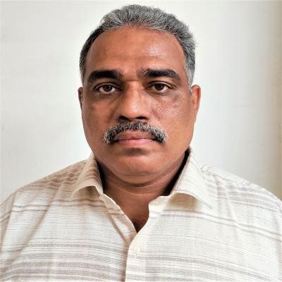

Dr. Roy P. Paily
Professor, Department of Electronics and Electrical Engineering, IIT Guwahati
Topic: VLSI Devices and Circuits for Smart Cities
Sahrdaya College of Engineering and Technology (Autonomous)
In association with IEEE Kerala Section
The International Conference on AI-Driven Solutions for Sustainable Smart Cities: Challenges and Opportunities (ADSSSC 2026) focuses on intelligent computational systems that enable inclusive, resilient, and sustainable urban environments across domains such as healthcare, mobility, energy, environment, and infrastructure.
The conference brings together researchers, practitioners, and industry professionals to present cutting-edge research, innovative applications, and cross-disciplinary solutions in Electrical, Electronics, Computer Science, Biomedical, Biotechnology, and Information Sciences.
ADSSSC 2026 features invited keynotes, technical paper sessions, tutorials, and workshops, and aims to foster strong collaborations between academia, industry, and government agencies.
Sahrdaya College of Engineering & Technology (Autonomous) is a leading engineering institution in Kerala with a strong focus on academic excellence, research, innovation, and industry collaboration.
The college offers flagship B.Tech programs in Biotechnology, Biomedical, Civil, Computer Science, Electrical & Electronics, and Electronics & Communication, along with M.Tech programs in Embedded Systems, Industrial Biotechnology, and Computer Science.
Sahrdaya is accredited by NBA and NAAC, recognized as a Scientific and Industrial Research Organization (SIRO) by DSIR, and hosts several centers of excellence and innovation hubs that support startups, entrepreneurship, and translational research.
Distinguished experts delivering keynotes at ADSSSC 2026.
Professor, Department of Electronics and Electrical Engineering, IIT Guwahati
Topic: VLSI Devices and Circuits for Smart Cities
Global Head of IT & Digital Transformation at Biocon Biologics
Associate Professor, Department of Biosciences and Bioengineering, IIT Bombay
Associate Professor, Civil Engineering, IIT Palakkad
Co-Founder, Silizium Circuits Pvt. Ltd., Germany · Researcher · IEEE Senior Member
Professor, Scientist, Vice-Chairman (Research) and Director, IoT and Intelligent Systems Lab,
School of Computer Science, Duy Tan University, Da Nang, Viet Nam
Topic: IoT‑Driven Intelligent Systems for Next‑Generation Smart Cities
International Conference on AI-Driven Solutions for Sustainable Smart Cities: Challenges and Opportunities.
| Track | Theme | Key Focus Areas |
|---|---|---|
| Track 1 | AI for Sustainable Healthcare Systems | AI-driven diagnosis and treatment; biomedical sensors and wearables; telemedicine; clinical decision support; assistive technologies for elderly and differently abled |
| Track 2 | Smart Mobility and Intelligent Transport Systems | AI-based traffic management; autonomous and connected vehicles; sustainable urban transport planning; V2X and IoT-enabled mobility; smart logistics |
| Track 3 | AI-Enabled Energy Systems and Smart Grids | Renewable energy forecasting; grid optimization; energy storage and management; power-electronic interfaces; demand-response strategies |
| Track 4 | Sensors, Actuators and Edge Intelligence | Next-generation sensors for environment and health; edge AI and low-latency inference; energy-harvesting sensor networks; embedded sensing and actuation |
| Track 5 | Communication, IoT and Cyber-Physical Systems | 5G/6G and IoT networking; AI-driven communication protocols; urban IoT for water, waste, and air quality; cybersecurity and privacy for CPS |
| Track 6 | AI, Algorithms and Sustainability in Urban Systems | Algorithms for sustainable planning; AI for climate resilience and disaster management; cross-domain AI integration; policy, ethics, and governance |
A quick overview of IEEE ADSSSC 2026, its theme, highlights, and venue.
Category-wise registration details for IEEE ADSSSC 2026 (inclusive of applicable taxes).
| Category | Fee |
|---|---|
| Faculty — IEEE Members | ₹ 6,500 |
| Faculty — Non-IEEE Members | ₹ 8,000 |
| Student — IEEE Members | ₹ 5,000 |
| Student — Non-IEEE Members | ₹ 5,500 |
| Industry Professionals — IEEE Members | ₹ 7,600 |
| Industry Professionals — Non-IEEE Members | ₹ 9,000 |
| Foreign Delegates | US$ 255 |
The Microsoft Conference Management Toolkit (CMT) is used to manage the submission, review, and decision processes for ADSSSC 2026. The service is provided free of cost by Microsoft, including Azure infrastructure, software development, and support.
Thrissur, known as the “Cultural Capital of Kerala,” is renowned for its vibrant festivals, historic temples, and rich cultural heritage. The city hosts the famous Thrissur Pooram, one of the most spectacular temple festivals in India.
Attractions in and around Thrissur include:
With its welcoming atmosphere and diverse attractions, Thrissur provides an enriching cultural backdrop for conference participants.